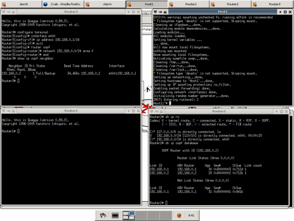

| | Home | User guide | Advanced user guide | Links | Download | Contact | |
Welcome to Einar |
|
 |
News2006-03-07Release Candidate 1 released 2006-03-06 Changed the name to Einar 2006-03-01 Created a small Demo movie 2006-02-28 Beta 4 released 2006-02-24 This webpage is published. It is still under development Einar is in beta 3 stage. The final release is scheduled for 7 march 2006. What is Einar?Einar is a live cd router simulator that is ment to aid students in learning routing protocols. It can also be connected to physical routers that talk RIP, OSPF, BGP or IS-IS Who is it made by?It is made by a team of 5 students (project manager, requirement analyst, tester and two delevelopers) at the Royal institute of technology in Sweden. How does it work?The CD is based on Knoppix which is a Linux distribution that can be run from a CD. The virtual machine monitor Xen is used to run multiple virtual Debian machines, each of the virtual machine runs Quagga which is a routing software with an interface that is very similar to Cisco IOS. How do I get started?Download the live CD iso, burn it to a CD and boot it on a PC. You will get a startpage in Firefox where you can get started. The licence is GPL so it is free Why the name Einar?It stands for Einar is not a router |